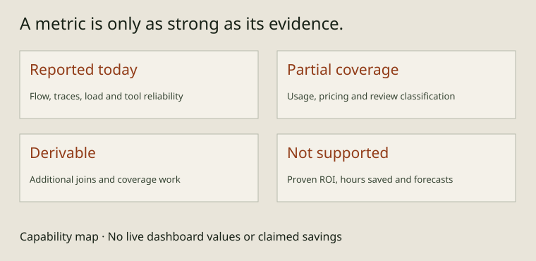

THE GOVERNED SOFTWARE FACTORY
Measure the flow. Inspect the evidence.

AIDA's reports help a team inspect delivery flow, traceability, recorded usage and tool reliability. They describe the evidence available to the configured tools. They do not measure every conversation, every human intervention or the value of the resulting software.
This capability map was checked against source and command help on 29 October 2026. It contains no live dashboard values or claimed savings. People continue developing and reviewing conversationally; the agent maintains structured intent and uses reporting tools in the background when configured to do so.
Reported today
- Cycle time:
aida metrics cycle-timeaggregates per-activity durations and work, wait and unknown time, with percentiles, rework signals and excluded-item reasons. It reconstructs timelines from store transitions and the local drain feed; it does not fetch forge timestamps. Unknown time is unaccounted time, not productive work or zero. - Traceability and spec evidence:
aida metrics ai-liftreports commit-trailer attribution signals.aida showconnects a spec to implementation;aida criteriainspects acceptance evidence. Trailer or test-trace coverage is not a proof of correctness or a complete code-coverage percentage. - Drain outcomes:
aida metrics agent-liftandaida usage drainsreport recorded autonomous-run outcomes. Read their coverage and failure classifications before comparing windows. The invocation split is a CLI activity measure; agent-issued CLI calls must not be read as human productivity. - Effort and load:
aida load reportsummarizes available estimates andaida load calibrationcompares captured buckets. The capture model supports open, plan, implementation/ship and review touchpoints. Open and pickup estimates are supported through--effort; shipping captures the implementer's declared effort, and review has its own assessment. Calibration uses the ship bucket as its actual value, not a stopwatch or measured equivalent human work. Missing touchpoints limit coverage. - Tool reliability: with local telemetry enabled, usage reports show command-shape counts, durations and exit results.
aida usage slowest,aida usage errorsandaida usage timelineaddress different questions. Telemetry can be disabled and local logs may be absent; invocation counts do not measure developer output.
Recorded with incomplete coverage
Token attribution is supported through aida usage rebuild and aida usage show, using retained Claude Code and Codex artifacts with attributable session evidence. Coverage depends on available artifacts and launch/handoff evidence; it is not a complete account of all agent work. The built-in ledger does not parse Antigravity artifacts. Provenance output distinguishes known write/session context from missing model, harness or usage evidence.
aida usage show --cost adds an offline estimate using the binary's pinned, dated rate table. The bundled table is versioned 2026-09-22.1 and prices only Claude Sonnet 4 (20250514) and Opus 4.1 (20250805), plus their listed aliases. Newer Claude models and Codex models remain unpriced. Unpriced models or token classes remain unpriced; they are not zero-cost usage. Cache-read, cache-write and uncached input are distinct classes. The estimate is not billing and should not be presented as a complete project cost.
Review artifacts record judgments and findings against commits; aida review classes summarizes classified findings. Optional classification and local artifact availability limit coverage. Review artifacts and cycle-time bounce counters are separate sources; do not assume one is a complete report of the other.
Derivable without a finished joined report
Git links and review artifacts can support additional analysis such as lines changed per spec or review rounds joined across a change's history. That requires a defined join, deduplication and coverage accounting. AIDA does not provide a complete joined business-performance report merely because some inputs exist. This is distinct from the implemented effort-calibration and cycle-time reports above.
Not supported as a product claim
There is no supported report proving hours saved against equivalent human work, a return on investment, or a reliable feature-duration forecast. Effort buckets are coarse declarations or assessments. Heft describes graph relationships, not a measured human-time estimate. Neither bucket sums, invocation counts nor token volume establish business value.
Proposals for richer attribution and joined historical reporting remain proposals until their implementation and evidence are available. The overview keeps these categories separate; historical repository counts elsewhere in that assessment are dated snapshots, not current product performance promises.
Ask a useful management question
Ask: "Where is work waiting, what remains unknown, and which records explain the delay?" Then inspect a bounded reporting window and its exclusions. Ask the agent to explain changes in coverage before attributing changes in a metric to the process itself. Keep quality judgment and human discussion alongside quantitative signals.
Source and inspection
aida metrics cycle-time --help
aida metrics agent-lift --help
aida metrics ai-lift --help
aida usage show --help
aida load report --help
aida load calibration --help
aida review classes --helpContributors can inspect cycle-time aggregation, token attribution and costing, effort capture and calibration, and the pinned rate table. Use the reporting reference for operational detail and workflow guide for record scopes.